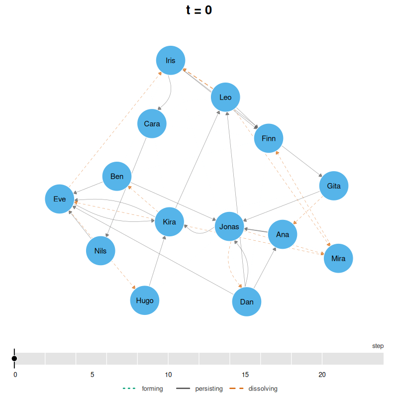
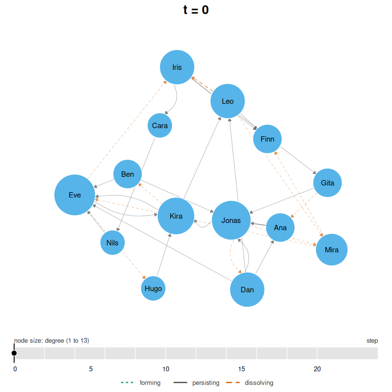
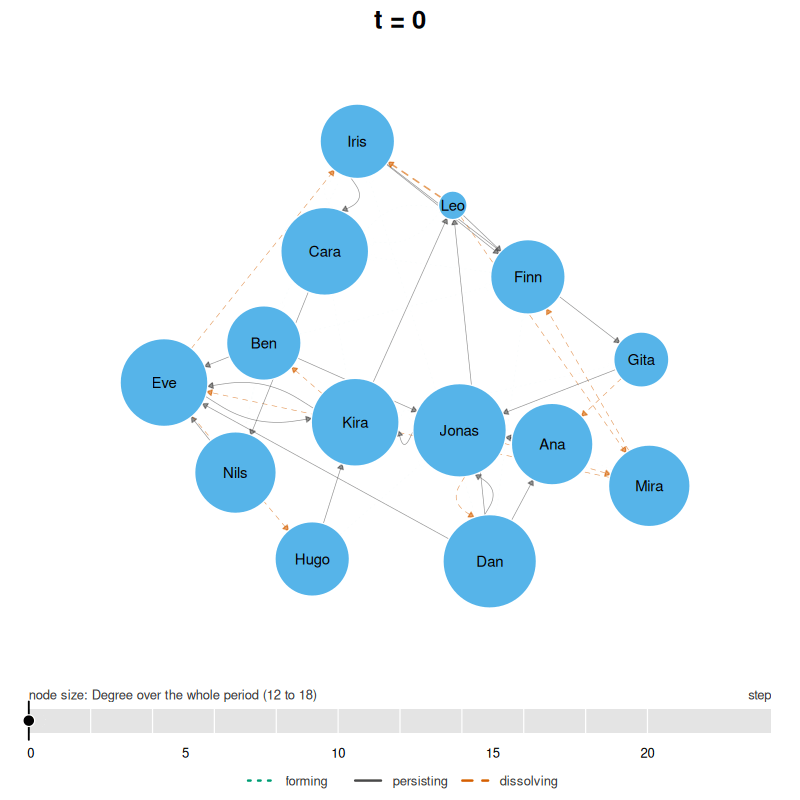

A temporal network is measured on a grid of time bins.
snapshots() tabulates the bins and
plot(dn, type = "snapshots") draws them side by side;
animate() joins them with motion. This article builds the
film step by step on the two datasets that ship with the package: a day
of contacts in a classroom (school_contacts, 14 pupils) and
ten weeks of a MOOC discussion forum (mooc_posts and
mooc_people, the chapter 17 data). Writing a GIF needs the
gifski package and writing a video needs av; both are in Suggests.
What the film is made of
Which bins does the film show? The same four grid arguments every
measuring verb takes: start, end,
step and window. The classroom network runs
from 0 to 21.5 steps.
dn <- dynet(school_contacts)
dn
#> # Temporal network (interval format, directed) | a cograph netobject
#> # 14 vertices | 240 edge spells | 110 distinct pairs
#> # observed from 0 to 21.52 step, binned every 1
#>
#> from to start end duration weight
#> Jonas Dan 0.00 1.10 1.10 1
#> Gita Ana 0.14 0.98 0.84 1
#> Leo Mira 0.15 0.42 0.27 1
#> Leo Iris 0.15 0.96 0.81 1
#> Kira Ben 0.33 0.69 0.36 1
#> Leo Iris 0.38 0.50 0.12 1
#> # 234 more spells. summary() describes the network; plot() draws it.A window of four steps moved two steps at a time gives eleven overlapping bins.
bins <- snapshots(dn, step = 2, window = 4)
summary(bins)
#> time ties nodes weight
#> 1 0 29 14 31
#> 2 2 33 14 39
#> 3 4 50 14 61
#> 4 6 54 14 69
#> 5 8 45 14 59
#> 6 10 54 14 76
#> 7 12 51 14 70
#> 8 14 40 14 50
#> 9 16 24 14 25
#> 10 18 25 14 25
#> 11 20 17 14 17animate() takes the same grid and writes one file. The
extension chooses the encoder: .gif here, .mp4
or .webm for a video.
film <- animate(dn, step = 2, window = 4, file = "animating_files/classroom.gif")
film
#> # Animation of 11 bins in 66 frames at 12 fps | spring layout | gif | time in step
#> # animating_files/classroom.gif
#> bin frame time window_start window_end nodes idle ties forming dissolving
#> 1 1 0 0 4 14 0 29 NA 10
#> 2 7 2 2 6 14 0 33 14 9
#> 3 13 4 4 8 14 0 50 26 9
#> 4 19 6 6 10 14 0 54 13 20
#> 5 25 8 8 12 14 0 45 11 11
#> 6 31 10 10 14 14 0 54 20 12
#> 7 37 12 12 16 14 0 51 9 15
#> 8 43 14 14 18 14 0 40 4 25
#> 9 49 16 16 20 14 0 24 9 9
#> 10 55 18 18 22 14 0 25 10 8
#> 11 61 20 20 24 14 0 17 0 NA
The table is one row per bin, and its time and
ties columns are the snapshot table’s: the eleven bins hold
29, 33, 50, 54, 45, 54, 51, 40, 24, 25 and 17 ties in both. Two columns
are the film’s own. forming counts the ties of a bin that
were not active in the bin before, and dissolving those
that are not active in the bin after; the first bin has no
forming and the last no dissolving, so they
are NA there rather than zero. The third bin, at step 4,
holds 50 ties of which 26 are new, and 9 of them will be gone by the
next bin. The classroom is busiest in the middle of the day and quiet at
the end, where the last bin holds 17 ties and nothing is forming.
Four things are drawn in every frame.
- Tie width follows weight on one scale for the whole film. A tie of weight 3 is the same width in the quiet last bin as in the busy fourth. The scale is fixed across frames on purpose: a per-frame scale would draw the same tie wide in a quiet frame and narrow in a busy one, a change the viewer would read as data.
- Ties are styled by what they are doing. A tie forming during the transition to the next bin is dotted and green, one persisting is solid and grey, one dissolving is dashed and vermilion. Line type carries the distinction, so it survives without colour.
-
Between bins the picture moves. Each bin is drawn
tweentimes, six by default. A forming tie fades in and a dissolving one fades out along the transition, and under the default easing each bin holds still before it starts to change, so it can be read. - A timeline under the network shows the grid with each bin’s start as a tick, filled up to the current time, with a marker that glides during a transition. The key to the drawing sits above and below it.
summary(film)
#> bins frames fps seconds tween ease layout format measure first_time
#> 1 11 66 12 5.5 6 dwell spring gif <NA> 0
#> last_time min_ties max_ties turnover file
#> 1 20 17 54 0.3074074 animating_files/classroom.gifEleven bins at six frames each is 66 frames, five and a half seconds at 12 frames per second.
Node size follows a measure
Which pupils matter in each bin? measure takes the name
of any snapshot measure from dyn_centrality() and computes
it on the film’s own grid, so a vertex grows and shrinks bin by bin. The
area of the circle, not its radius, follows the measure, on one scale
across every frame.
per_bin <- animate(dn, step = 2, window = 4, measure = "degree",
file = "animating_files/classroom-degree.gif")
summary(per_bin)
#> bins frames fps seconds tween ease layout format measure first_time
#> 1 11 66 12 5.5 6 dwell spring gif degree 0
#> last_time min_ties max_ties turnover file
#> 1 20 17 54 0.3074074 animating_files/classroom-degree.gif
A size that changes every bin shows who is active now. A size that
never changes shows who matters over the whole day, and the eye can then
follow the ties alone. dyn_centrality() with
window = "all" measures the whole period as one window, and
measure accepts that result: a result with a single time
point gives every vertex one size for the whole film.
whole <- dyn_centrality(dn, measure = "degree", window = "all")
print(whole, n = 14)
#> # Degree (node-level)
#> # 14 vertices | 1 time points, 21.52 per bin | time in step
#> time node measure value
#> 0 Ana degree 16
#> 0 Ben degree 15
#> 0 Cara degree 17
#> 0 Dan degree 18
#> 0 Eve degree 17
#> 0 Finn degree 15
#> 0 Gita degree 13
#> 0 Hugo degree 15
#> 0 Iris degree 15
#> 0 Jonas degree 18
#> 0 Kira degree 17
#> 0 Leo degree 12
#> 0 Mira degree 16
#> 0 Nils degree 16
fixed <- animate(dn, step = 2, window = 4, measure = whole,
file = "animating_files/classroom-whole.gif")
summary(fixed)
#> bins frames fps seconds tween ease layout format
#> 1 11 66 12 5.5 6 dwell spring gif
#> measure first_time last_time min_ties max_ties turnover
#> 1 Degree over the whole period 0 20 17 54 0.3074074
#> file
#> 1 animating_files/classroom-whole.gif
Over the day Dan and Jonas have 18 distinct contacts each and Leo 12,
so Dan and Jonas are the largest circles in every frame and Leo the
smallest, whatever each is doing in the bin on screen. The
measure column of the summary says which reading was
used.
Still vertices, or drifting vertices
Should the vertices move? Under layout = "spring", the
default, the union of every bin is laid out once and every frame reuses
those positions; the only thing that moves is the ties, and a pupil is
always in the same place, which is what makes one frame comparable with
the next. Under layout = "relaxed" each bin is laid out
again, seeded from the bin before it and held near it, so the groups
that exist in a bin gather and the groups that dissolve drift apart.
drift <- animate(dn, step = 2, window = 4, measure = "degree",
layout = "relaxed",
file = "animating_files/classroom-relaxed.mp4")
summary(drift)
#> bins frames fps seconds tween ease layout format measure first_time
#> 1 11 66 12 5.5 6 dwell relaxed mp4 degree 0
#> last_time min_ties max_ties turnover file
#> 1 20 17 54 0.3074074 animating_files/classroom-relaxed.mp4Two guarantees keep a relaxed film readable. No vertex moves further
than max_displacement, 0.08 layout units by default,
between consecutive bins, and every vertex’s path is smoothed over its
neighbouring bins. The relaxed layout is the one for a network whose
structure changes, the fixed one for a network whose structure holds
while its activity changes. The classroom is the second kind: the same
pupils sit near each other all day, and the fixed film says so.
The forum: who is there, and when
The forum is a different kind of network. It is threaded, so a tie is live from a reply until its discussion falls silent, and its participants arrive over ten weeks rather than all being present from the first minute. The construction is the chapter’s: self-replies carry no tie, a thread with a single post never became an exchange, and the experience level is the partition.
replies <- subset(mooc_posts, sender != receiver)
busy_threads <- with(replies, names(which(table(discussion) > 1)))
exchanges <- subset(replies, discussion %in% busy_threads)
people <- transform(
mooc_people,
expert_level = as.character(factor(experience, levels = c(1L, 2L, 3L),
labels = c("Expert", "Student", "Teacher")))
)
dn_full <- dynet(exchanges, from = "sender", to = "receiver",
time = "timestamp", thread = "discussion",
nodes = people, time_unit = "days",
directed = TRUE, loops = FALSE, groups = "expert_level")
forum <- induce_subgraph(dn_full, degree > 20)
forum
#> # Temporal network (threaded format, directed) | a cograph netobject
#> # 45 vertices | 686 edge spells | 428 distinct pairs
#> # observed from 0.1138889 to 72.01111 days, binned every 1
#> # vertex attributes: experience, expert_level, groups
#>
#> from to start end duration weight
#> 219 444 0.1138889 69.47778 69.36389 1
#> 310 444 0.1680556 68.38681 68.21875 1
#> 19 310 0.2784722 14.10486 13.82639 1
#> 19 444 0.2909722 69.47778 69.18681 1
#> 30 444 0.8791667 69.47778 68.59861 1
#> 30 444 0.8819444 68.38681 67.50486 1
#> thread
#> Most important change for your school or district?
#> Submitting Questions for the Expert Panel
#> How important is teacher training in a digital learning transition phase?
#> Most important change for your school or district?
#> Most important change for your school or district?
#> Submitting Questions for the Expert Panel
#> # 680 more spells. summary() describes the network; plot() draws it.Who is there in a given week? The log says when each participant
posted, but nothing about when they joined or left, so
dynet() treats every one of the 45 as present from day 0 to
day 72. set_vertex_spells() with "ties"
declares each participant present from their first tie to their
last.
forum <- set_vertex_spells(forum, "ties")
spans <- as.data.frame(forum, what = "vertex_spells")
head(spans)
#> vertex_spell node start end duration instant session onset_censored
#> 1 1 1 4.120139 71.40625 67.28611 FALSE <NA> FALSE
#> 2 2 100 12.842361 70.53958 57.69722 FALSE <NA> FALSE
#> 3 3 11 4.061806 71.43819 67.37639 FALSE <NA> FALSE
#> 4 4 116 3.164583 70.53958 67.37500 FALSE <NA> FALSE
#> 5 5 13 18.147222 72.01111 53.86389 FALSE <NA> FALSE
#> 6 6 137 11.107639 69.47778 58.37014 FALSE <NA> FALSE
#> terminus_censored
#> 1 FALSE
#> 2 FALSE
#> 3 FALSE
#> 4 FALSE
#> 5 FALSE
#> 6 FALSEParticipant 1 is present from day 4.1 to day 71.4, participant 13 only from day 18.1. Of the 45, 29 are present in the first week, 16 arrive after day 7, and one leaves before day 65.
With presence declared, absent says how a participant
who is not there is drawn. "fade", the default, keeps them
in place at a quarter opacity; "away" parks them out of
sight at the edge of the layout and glides them in when they arrive and
out when they leave, with a green ring on the way in and a vermilion one
on the way out. The palette is three colours from the Okabe-Ito set that
leave green and vermilion to the tie states.
arrivals <- animate(forum, start = 0, end = 70, step = 2, window = 7,
measure = "degree", absent = "away", labels = FALSE,
palette = c("#E69F00", "#56B4E9", "#CC79A7"),
file = "animating_files/forum.mp4")
print(arrivals, n = 36)
#> # Animation of 36 bins in 216 frames at 12 fps | spring layout | mp4 | time in days
#> # node size follows degree
#> # animating_files/forum.mp4
#> bin frame time window_start window_end nodes idle ties forming dissolving
#> 1 1 0 0 7 29 0 53 NA 0
#> 2 7 2 2 9 29 0 59 6 0
#> 3 13 4 4 11 29 0 66 7 0
#> 4 19 6 6 13 37 0 81 15 4
#> 5 25 8 8 15 38 0 95 18 0
#> 6 31 10 10 17 39 0 101 6 6
#> 7 37 12 12 19 41 0 113 18 0
#> 8 43 14 14 21 41 0 131 18 9
#> 9 49 16 16 23 41 0 140 18 13
#> 10 55 18 18 25 42 0 134 7 3
#> 11 61 20 20 27 43 1 143 12 3
#> 12 67 22 22 29 45 1 154 14 13
#> 13 73 24 24 31 45 1 158 17 1
#> 14 79 26 26 33 45 1 180 23 5
#> 15 85 28 28 35 45 2 195 20 10
#> 16 91 30 30 37 45 2 201 16 21
#> 17 97 32 32 39 45 2 193 13 13
#> 18 103 34 34 41 44 3 186 6 6
#> 19 109 36 36 43 44 3 195 15 2
#> 20 115 38 38 45 44 3 196 3 5
#> 21 121 40 40 47 44 2 229 38 12
#> 22 127 42 42 49 44 2 242 25 6
#> 23 133 44 44 51 44 0 275 39 4
#> 24 139 46 46 53 44 0 276 5 4
#> 25 145 48 48 55 44 0 276 4 27
#> 26 151 50 50 57 44 0 251 2 34
#> 27 157 52 52 59 44 0 220 3 18
#> 28 163 54 54 61 44 0 208 6 9
#> 29 169 56 56 63 44 0 207 8 3
#> 30 175 58 58 65 44 0 204 0 25
#> 31 181 60 60 67 44 0 181 2 22
#> 32 187 62 62 69 44 0 160 1 7
#> 33 193 64 64 71 44 0 160 7 1
#> 34 199 66 66 73 44 0 164 5 7
#> 35 205 68 68 75 44 0 157 0 87
#> 36 211 70 70 77 34 0 70 0 NAThe nodes column is now the number present, not the
number of vertices: 29 in the first bin, 45 by day 22. The
idle column counts those present with no tie in the bin; it
stays at 0 to 3 here, because a threaded tie lives for as long as its
discussion and a participant is seldom present without one. Ties climb
from 53 in the first bin to 276 around day 46 and fall to 70 in the
last, when the course is ending.
summary(arrivals)
#> bins frames fps seconds tween ease layout format measure first_time
#> 1 36 216 12 18 6 dwell spring mp4 degree 0
#> last_time min_ties max_ties turnover file
#> 1 70 53 276 0.06735751 animating_files/forum.mp4Thirty-six bins at six frames each is 216 frames, eighteen seconds.
The turnover column is the median share of a bin’s ties
that were not active in the bin before, over the bins after the first:
0.07 here.
Smoothing
A film can feel episodic for two separate reasons, and they have separate remedies.
The first is the grid. With window equal to
step the bins tile the period and a tie that lasts one bin
appears and vanishes; with window larger than
step the bins overlap, a tie persists across several of
them, and each frame carries some of the past. The forum film above
already slides a seven-day window two days at a time. The same grid with
a two-day window tiles instead.
tiled <- animate(forum, start = 0, end = 70, step = 2, window = 2,
measure = "degree", absent = "away", labels = FALSE,
palette = c("#E69F00", "#56B4E9", "#CC79A7"),
file = "animating_files/forum-tiled.mp4")
print(tiled, n = 6)
#> # Animation of 36 bins in 216 frames at 12 fps | spring layout | mp4 | time in days
#> # node size follows degree
#> # animating_files/forum-tiled.mp4
#> bin frame time window_start window_end nodes idle ties forming dissolving
#> 1 1 0 0 2 7 0 10 NA 0
#> 2 7 2 2 4 14 0 22 12 0
#> 3 13 4 4 6 29 0 44 22 0
#> 4 19 6 6 8 29 0 58 14 4
#> 5 25 8 8 10 29 1 56 2 0
#> 6 31 10 10 12 34 1 71 15 6
#> # 30 more bins.
summary(tiled)
#> bins frames fps seconds tween ease layout format measure first_time
#> 1 36 216 12 18 6 dwell spring mp4 degree 0
#> last_time min_ties max_ties turnover file
#> 1 70 10 242 0.09504132 animating_files/forum-tiled.mp4The tiled film opens with 7 participants and 10 ties where the sliding one opens with 29 and 53, and its turnover is 0.10 against 0.07. On this forum both are small, because a threaded tie lives for as long as its discussion; on a contact network the same choice matters more. The classroom film in the first section, four-step windows moved two steps at a time, has a turnover of 0.31, and with tiled two-step windows it would be higher still. That number is what decides whether a film reads as a story or a slideshow.
The second reason is the easing. Under ease = "dwell",
the default, each bin holds still before it changes, which is what lets
it be read. Under ease = "continuous" nothing holds still:
positions follow a Catmull-Rom spline through the bins (Catmull and Rom,
1974), so a vertex moving across several bins traces one smooth path,
and fades are linear.
flowing <- animate(forum, start = 0, end = 70, step = 2, window = 7,
measure = "degree", absent = "away", labels = FALSE,
layout = "relaxed", ease = "continuous",
palette = c("#E69F00", "#56B4E9", "#CC79A7"),
file = "animating_files/forum-continuous.mp4")
summary(flowing)
#> bins frames fps seconds tween ease layout format measure first_time
#> 1 36 216 12 18 6 continuous relaxed mp4 degree 0
#> last_time min_ties max_ties turnover file
#> 1 70 53 276 0.06735751 animating_files/forum-continuous.mp4A relaxed layout under continuous easing is the film that looks least like a sequence of pictures. It is also the one in which no single bin can be read off a frame, which is the trade.
When to use which
| Choice | Take this | When |
|---|---|---|
layout |
"spring" |
the structure holds and the activity changes; frames must be comparable |
"relaxed" |
groups form and dissolve; the structure of each moment matters more than comparability | |
measure |
a name | who is active now |
| a whole-window result | who matters over the period; the eye follows the ties | |
| a vertex attribute | a fixed size of your own, such as two tiers | |
absent |
"fade" |
presence is declared and the viewer should see where the absent sit |
"away" |
arrivals and departures are the story | |
window |
equal to step
|
each frame is one bin, nothing carried over |
larger than step
|
ties persist across frames; the film flows | |
ease |
"dwell" |
bins are to be read one by one |
"continuous" |
motion is to be read; bins are not | |
file |
.gif |
it must play anywhere, and the film is short |
.mp4 |
it is long, large, or relaxed; a fifth of the size or less |
References
Bender-deMoll, S. and McFarland, D. A. (2006). The art and science of dynamic network visualization. Journal of Social Structure, 7(2).
Catmull, E. and Rom, R. (1974). A class of local interpolating splines. In R. E. Barnhill and R. F. Riesenfeld (eds), Computer Aided Geometric Design, Academic Press, 317-326.
Moody, J., McFarland, D. and Bender-deMoll, S. (2005). Dynamic network visualization. American Journal of Sociology, 110(4), 1206-1241.
Saqr, M. (2024). Temporal network analysis: Introduction, methods and analysis with R. In M. Saqr and S. López-Pernas (eds), Learning Analytics Methods and Tutorials, Springer.